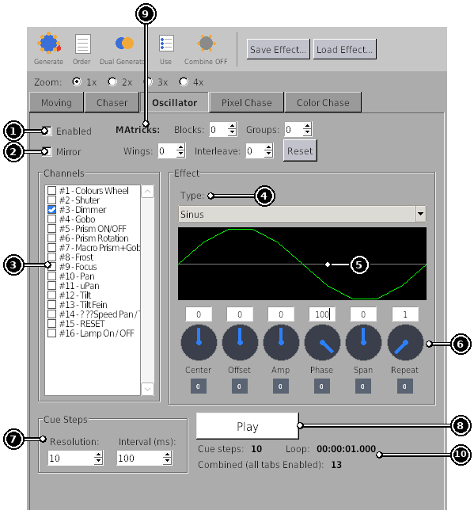
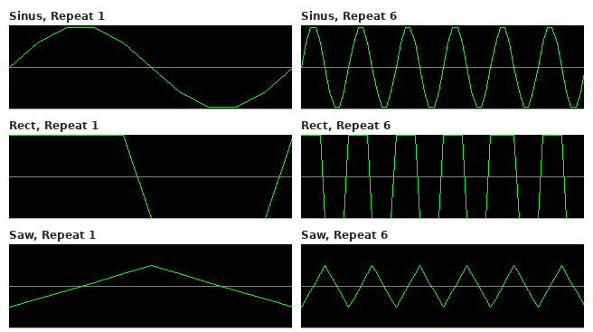
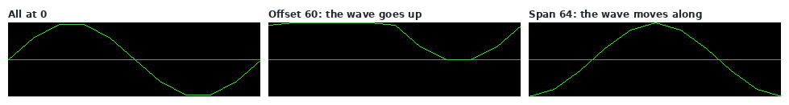

For: Full
The Effect Generator makes a moving, chasing or oscillating effect for the fixtures ticked in Fixture Control, plays it live and writes it into the Library as a light sequence. Open Fixture Control with the Fixtures button, tick the fixtures (a click on a fixture ticks or unticks it), then press the Effect icon at the bottom left (under the fixture list of Fixture Control). With no fixture ticked it opens on Pixel Chase.
The tabs: Moving (Pan / Tilt figures, only for fixtures with Pan and Tilt), Chaser, Color Effect (only for fixtures with Red, Green and Blue), Oscillator, Pixel Chase and Color Chase. Generate (the first icon) writes the effect of the tab, or of all the enabled tabs together when Combine is on, into the Library under the name you give.
The fine Pan / Tilt channels (Pan Fine, Tilt Fine, uPan ...) are always 0 in the generated steps - here, in the Color Chase, in the Pixel Chase and in Fixture Control's Generate chase. While Pan / Tilt fade from one step to the next, the program makes the fine value itself, so the move is smooth; a fine value kept in the steps made it jump where Pan / Tilt stay the same.
The Oscillator sends a wave to the ticked channels: Sinus, Cosinus, Rect or Saw, as in LumiDMX. The graph shows the wave as it goes out to the first fixture, from the first step on the left to the last on the right, and it changes as you turn the knobs.

The six Beam 5R of Andrei_edit ticked, the Dimmer channel chosen, Phase 100.
| 1 | Enabled - not ticked, the tab is grey, sends nothing and is left out of Generate; what is set on it stays. |
| 2 | Mirror - the fixtures in pairs from the outside in: the last fixture plays exactly what the first one plays, at the same moment; the one before the last what the second plays, and so on. Both halves move together. |
| 3 | The channels of the ticked fixtures. Tick the ones the wave goes to; every ticked channel of a fixture gets the same value. |
| 4 | Type - Sinus, Cosinus, Rect or Saw (see below). |
| 5 | The graph: black, the grey line at the Center level, the wave in green, with a point at every step. |
| 6 | The knobs: Center, Offset, Amp, Phase, Span and Repeat (see below). Drag a knob, turn the mouse wheel over it, or write the value in the field above it and press Enter; the small button under it puts it back to 0 (Repeat: 1). |
| 7 | Resolution - the steps of one period of the wave; Interval (ms) - how long each step lasts. |
| 8 | Play / Stop - plays the effect on the fixtures (Live panel, DMX output, 3D) until you stop it. |
| 9 | MAtricks - Blocks, Groups, Wings, Interleave and Reset: how the fixtures are spread over the effect (see below). The same values on Moving, Chaser, Color Effect and Oscillator. |
| 10 | The steps: Cue steps and Loop - how many steps this tab makes and how long one loop lasts; Combined (all tabs Enabled) - how many steps Generate writes when all the Enabled tabs go together (Combine). They change as soon as you change anything. |

Resolution 10, all the other knobs at 0.
| Knob | Range | What it does |
|---|---|---|
| Center | -128 .. 127 | The middle level of the wave (the grey line): 0 = half (128), lower to the left, higher to the right. |
| Offset | -128 .. 127 | Lifts or lowers the whole wave, by up to the full range at the ends. What goes over 255 or under 0 is cut there. |
| Amp | -128 .. 127 | The height of the wave: 0 = from 0 to 255 around the middle, all the way left = a flat line at the Center level. |
| Phase | -100 .. 100 | Spreads the fixtures over the wave. Fixture number i of N starts i / N × Phase of the graph later: at 0 all the fixtures do the same, at 100 they are spread over the whole graph, so the wave runs from one fixture to the next; below 0 it runs the other way. |
| Span | -128 .. 127 | Moves the wave along the graph, by up to half the graph at the ends; turning it right moves the wave to the right. |
| Repeat | 1 .. 10 | How many periods of the wave there are in the graph. |

The effect stays the same; MAtricks only changes which fixtures do the same thing and in what order - as in grandMA3. 0 or 1 = off. With Phase at 0 every fixture does the same anyway, so on Moving, Color Effect and Oscillator MAtricks shows only with a Phase; on Chaser it changes the steps themselves.
| Setting | What it does |
|---|---|
| Blocks N | N fixtures side by side do the same: Blocks 2 = 1-2, 3-4, 5-6 in pairs. |
| Groups N | The places go round N by N: Groups 2 = odd against even. |
| Wings N | The fixtures in N parts, every second part backwards (a mirror between the parts). |
| Interleave N | Only every N-th fixture takes part (1, 3, 5 ... with 2); the others are left as they are. |
| Reset | All four back to 0. |
The six Beam 5R, Phase at the full graph:
| MAtricks | 1 | 2 | 3 | 4 | 5 | 6 | On the stage |
|---|---|---|---|---|---|---|---|
| off | 0° | 60° | 120° | 180° | 240° | 300° | a wave from left to right |
| Groups 2 | 0° | 180° | 0° | 180° | 0° | 180° | odd against even |
| Blocks 2 | 0° | 0° | 120° | 120° | 240° | 240° | three pairs |
| Wings 2 | 0° | 120° | 240° | 240° | 120° | 0° | from the middle out, mirrored |
| Wings 3 | 0° | 180° | 180° | 0° | 0° | 180° | 1, 4, 5 against 2, 3, 6 (a "W") |
| Interleave 2 | 0° | - | 120° | - | 240° | - | only 1, 3, 5 move |
When the fixtures do not divide evenly the first parts get one more: 8 fixtures with Wings 3 = 3, 3 and 2. On the Chaser the fixtures of one place light together: Wings 3 on 6 fixtures = 2 steps, first 1, 4, 5, then 2, 3, 6. The values are saved with Save Effect...; Generate writes ordinary steps, which play everywhere. Mirror works as before (on Moving it also turns the Pan of the second half round the centre, which Wings does not do).
The effect has Resolution × Repeat steps - one loop of the graph - and goes on from the first step after the last. Each step lasts Interval milliseconds. Generate writes exactly these steps - the numbers under Play show them before you generate.
Zoom (1x - 4x) makes the Moving grid bigger. It can be changed from any tab: the window takes the size it needs at once.
While a tab plays (Moving, Chaser, Color Effect or Oscillator), every change on that tab - a knob, the type, Resolution, Interval, the times, the points, the colours, Mirror, Reverse, Phase - reaches the fixtures within about a tenth of a second, without Stop and Play, as in LumiDMX. The effect goes on from the step it is at, with the new values.
When the change puts the effect on other channels (a channel ticked or unticked, a channel that now gets a value where it got only 0 before, or the other way), it starts again from its first step.
The other icons: Order changes the order in which the fixtures run the effect; Dual Generator opens a second generator for some of the fixtures; Use shows which generator each fixture is in.